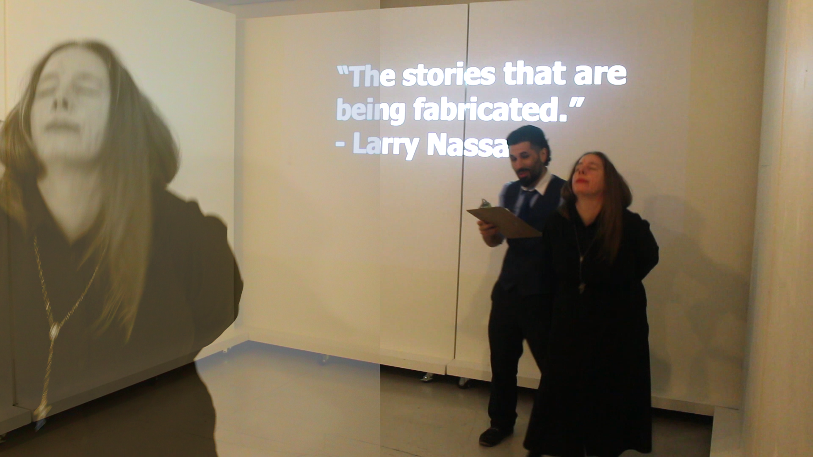
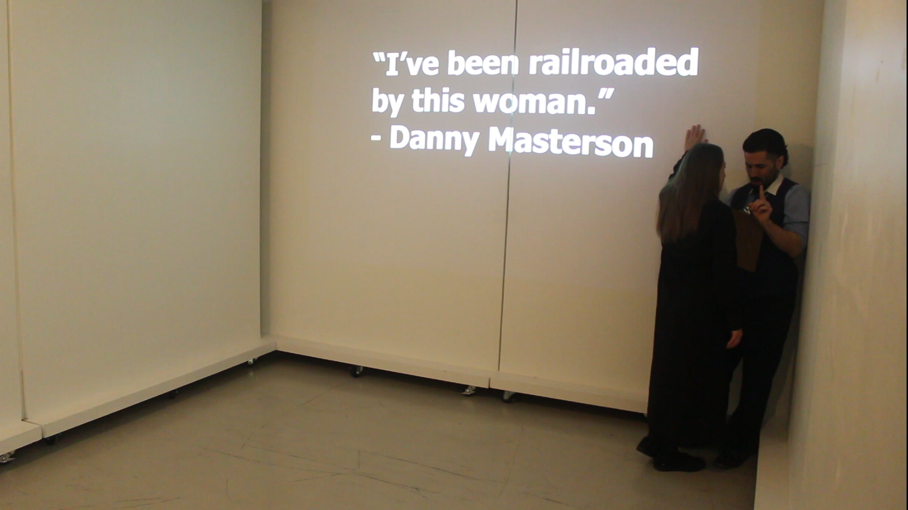
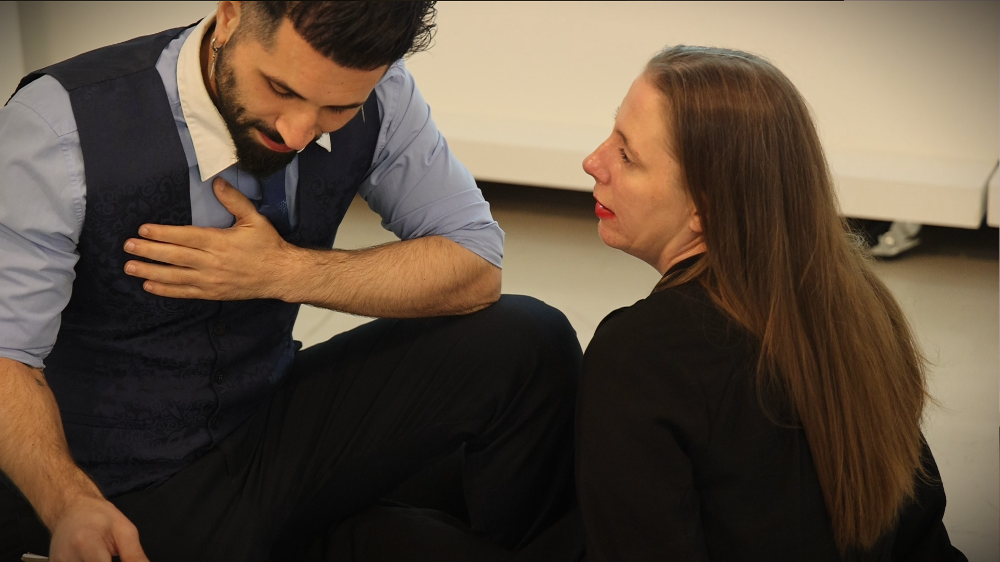
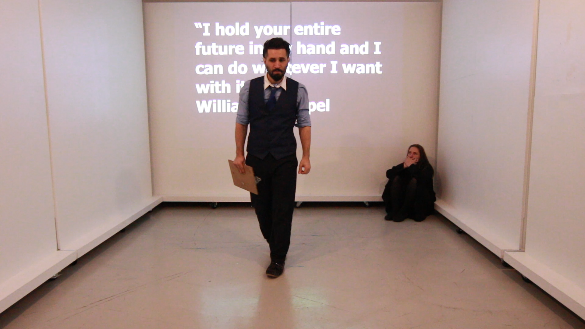

Act 4
Measured Misconduct: Angelo, Harvey, Larry, et al.
“From Shakespeare’s Measure for Measure” Act 2, Scene 2
“From Shakespeare’s Measure for Measure” Act 2, Scene 4
Artist Statement
CDA, Rhetorical, and Theater Connections:
- Rhetorical framing: Registers of evidence.
- CDA: Feminist CDA, agent obfuscation and elision; coercion and compliance.
- Boal’s connection: Forum Theater
William Shakespeare’s Measure for Measure is one of his lesser known and less frequently performed plays. However, given the slew of post #MeToo sexual assault convictions since 2017, the play seems strikingly relevant in our current socio-political moment. Indeed, the play’s focus on the rhetoric of power and coercion in a blatant case of sexual misconduct seems alarmingly familiar, especially in terms of the main antagonist’s, Angelo’s, evasive rhetoric and victim blaming.
This brief summary indicates why:
A Duke of Vienna (a rather ambivalent character) takes leave of the city, over which he has ruled for years. He appoints his second in command, an exceedingly strict Angelo (and a hateful man) to govern while he is gone. The Duke has long neglected morality laws, (signaled by the presence of the comic bawds in the play), which Angelo immediately reinforces by sentencing a young man, Claudio, to death for impregnating his girlfriend, pre marriage. Claudio’s sister Isabella, a novice nun, visits Angelo to beg for her brother’s life. Turned on by Isabella’s rhetoric and chastity, Angelo offers to spare Claudio if Isabella will have sex with him. The Duke, who secretly orchestrates what follows while disguised as a priest, arranges for Angelo to, instead, sleep with the latter’s former betrothed, Mariana, whom Angelo dumped when she lost her dowry. As Isabella is poised to reveal all to Angelo, the Duke disrobes his priestly attire, and restores justice. Angelo, whose hypocrisy knows no bounds, must marry Mariana, Claudio is pardoned, and Isabella now finds herself the object of the Dukes’ affection. He proposes, yet intriguingly, she does not answer.
After A directed scenes from the play in a Shakespeare showcase for her final class at X University, F was struck by her savvy directorial choices that focused on Angelo’s slippery rhetoric. Consequently, we decided to join forces, along with y, (camera and website) and P (reading Angelo’s part) to stage the scenes again, but with a critical discursive rhetorical performance (CDRP) focus. Our aim was to use the syntax and grammar of sexual coercion to choreograph the actor’s movements in our chosen performance space. In this space, we planned to project contemporary utterances that demonstrate the linguistics of sexual coercion and that aligned with Angelo’s rhetoric.
To do this, we collected a small corpus of utterances by men in positions of power who had either been convicted of sexual assault, acknowledged their misconduct, or, in the case of Judge Derek Johnson, had been publically reprimanded due to comments he made during the sentencing of a defendant found guilty of rape.[1]We then examined these utterances to uncover the syntactic and grammatical structures employed by the men to minimize or deflect responsibility for their sexual misconduct.

Our analysis of this small corpus revealed several recurring rhetorical strategies:
- First Person Pronouns: These were employed when foregrounding virtues, denying accusations, offering non-admitting apologies, claiming misunderstandings, emphasizing personal perspectives, or highlighting past virtues.
- Deflection of Responsibility: The men employed grammatical structures that minimized their direct involvement in the actions. For instance, they used passive voice to obscure responsibility, intense adverbs to demonstrate their indignation, or other means to portray themselves as victims of circumstances rather than active perpetrators,
- Women as Agents of Power: Using conditional statements, the men misrepresented sexual power dynamics, attributing agency to their victims. Other tactics often portrayed women as manipulative or angry, and men as unable to control themselves, suggesting that their misconduct was natural or inevitable.
- Temporal Evasion: The men employed temporal re-contextualization to distance themselves from their actions, often by years, implying personal change and outdated social norms to evade current responsibility.
- Legal Posturing: The men tried to detract from the seriousness of the accusations by evoking the law, minimizing or dismissing allegations that had not gone through the legal system. In addition, when they appealed to the law, they positioned themselves in allegiance with it, downplaying the experiences of the victims. They also constructed a position of authority, advising others on how to avoid legal consequences, reinforcing patriarchal power structures, and promoting a culture of denial and aggression.
- Ambiguity: The men hedged and were ambiguous, avoiding direct admissions of guilt while acknowledging the possibility of wrongdoing.

After analyzing these strategies, we found they align with Michelle Lazar’s concept of “gender-based ideologies,” which she describes in her work on feminist critical discourse analysis (FCDA) as “discourses that sustain a gendered social order in which some people, by virtue of being ‘men,’ are accorded privileges systemically, and others, by virtue of being ‘women,’ are routinely disadvantaged, excluded, and not taken seriously” (184; emphasis ours). What we termed our “villain’s corpus” — because their rhetoric so resembles Angelo’s — predominantly reflects attitudes that trivialize women’s experiences and perspectives, particularly in discourses surrounding sexual assault.
Once we had identified these rhetorical patterns, we matched selections from our corpus to Angelo and Isabella’s dialogue in two pivotal scenes in Measure for Measure — Act 2, Scenes 2 and 4.[2]Specifically, we did this to reflect Angelo’s internal monologue. Once we filmed the project, and as Angelo and Isabella spoke their lines, we projected these selections onto the wall of our performance space to suggest histhoughts. In addition, we employed the “villains’” syntax and grammar to block both actors’ movement, demonstrating how both Angelo and Isabella might inhabit Angelo’s internal monologue, given the accompanying projections.[3]
Neither P nor A are professional actors. P is a poet and a professor, and A is about to enter graduate school in applied linguistics. Nevertheless, both are familiar with CDRP. Given his previous collaboration with F on critical discourse analysis projects for the stage, P understood how blocking the syntax and grammar is odd but doable. Furthermore, as the antagonist, it felt more logical for P to embody the language from our corpus of sex offenders, given that Angelo is indeed a villain attempting to coerce a nun to have sex with him. Still, P had to enact the Shakespearean language and show how the contemporary language might reflect Angelo’s inner thoughts in response to Isabella.

For A, the blocking was more of a challenge. Everything that Isabella actually says in the scene should suggest her resistance and eventual horror at Angelo’s coercive rhetoric. Yet, we all had to consistently remind ourselves that we were staging Angelo’s language and the grammar of our villains’ corpus to reflect Angelo’s inner monologue. This forced A to act passively sexual, as though she has been roofied by Angelo’s beliefs about their interaction and the villain’s syntax. As a result, her vocal register, and her movements, became deliberately compliant, even though the words she speaks as Isabella are anything but.
Watching A as Isabella inhabit the language that viewers see projected on the wall, which illustrate how the perpetrators of sexual assault syntactically and grammatically construct their relationships with their victims, is disturbing. Sheover complacently provides a visceral demonstration of Angelo’s distorted perspectives. Sometimes, she seems drugged. Other times, she appears to have sexual agency. At all times, Isabella’s body language suggests sexual interest in Angelo. Indeed, even when her dialogue resists Angelo at the conclusion of Act 2, Scene 4, the projections suggest otherwise, and, accordingly, so do her movements. Her decisions to succumb to him, dictated by the projections on the wall, appear to be of her own volition, rather than Angelo’s coercion.
As a team, we grappled with A’s physicality at the climactic conclusion of Act 2, Scene 4. Here, Shakespeare’s language has Isabella loudly defy Angelo, yet our projections direct her body to comply, reflecting our villains’ distorted view of sexual dynamics. So, we looked to Boal to help us out. In Theaterof the Oppressed, Boal explains that in what he terms “Forum theater,” “the spectators intervene directly in the dramatic action and act” (102). We initially staged sections of the performance in May 2024, at A’s capstone presentation, inviting audience input on the final few moments of 2.4. At least two spectators suggested how A might behave as Isabella in accordance with our villains’ utterances at the end of this scene, even as the character vehemently rejects against Angelo’s proposition. The conclusion of our film indicates these suggestions as A navigates the lines between consent and coercion, showcasing not just Angelo’s propensity to shift blame, but the contemporary language of sexual assault and its distortion of agency and responsibility.

Final note: Our performance of CDRP consists of two 10-minute videos: Act 2, Scene 2 and Act 2, Scene 4. Viewers can select either one to watch independently, or view both for a more comprehensive experience of our adaptation of Measure for Measure.
Works Cited
Boal, Augusto. Theatre of the Oppressed. Translated by Emily Fryer, 3rd ed., Pluto Press, 2008.
Lazar, Michelle. “Feminist Critical Discourse Analysis: Relevance for Current Gender and Language Research,” The Handbook of Language, Gender, and Sexuality, edited by Susan Ehrlich, Miriam Meyerhoff, Janet Holmes, Wiley, 2014, pp. 180-199
Shakespeare, William. Measure for Measure. Edited by Barbara A. Mowat and Paul Werstine, Folger Shakespeare Library, Simon & Schuster, 2005.